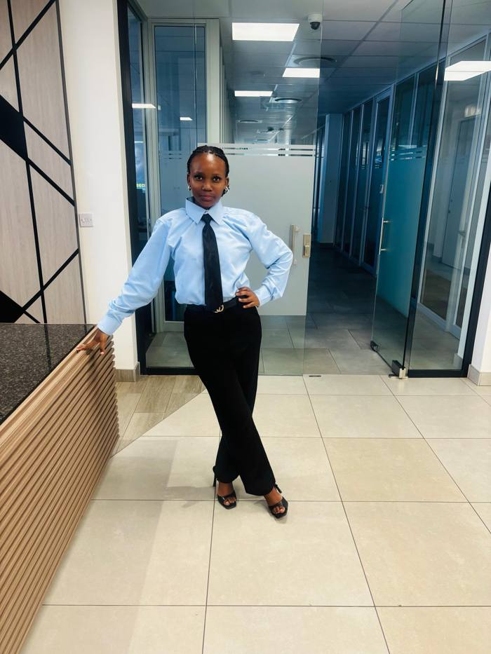
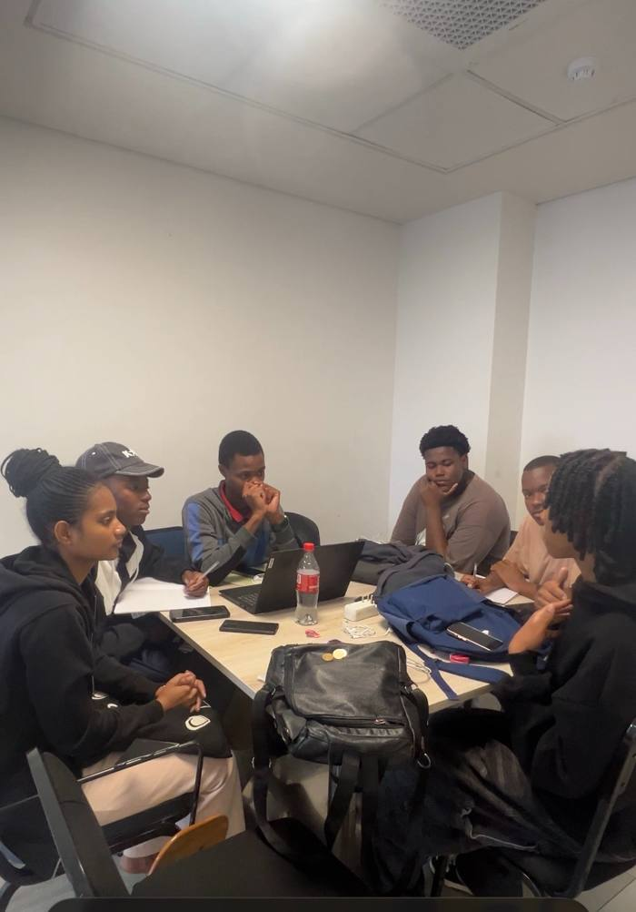
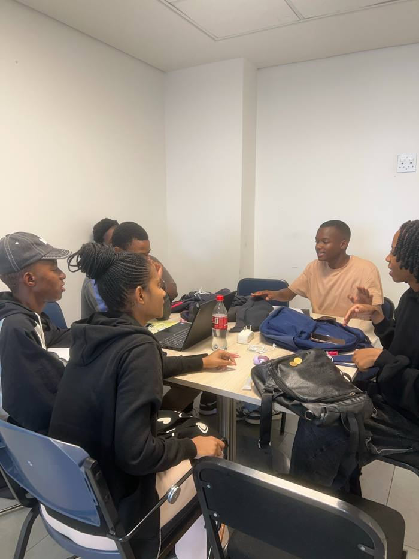

First-year BSc student turning sales and stock data into useful answers. Detail-oriented, hardworking and a good team player.
View my workGet in touch
I am a first-year Business Intelligence and Data Analytics student in Gaborone, Botswana. I take responsibility for my tasks, I like working with others, and I am seeking a data analyst attachment to gain real-world experience.
BSc Business Intelligence & Data Analytics
Botswana Accountancy College, Year 1 (2026)
Member of the Accounting Society
Gaborone, Botswana · keatametsebosigo@example.com · www.linkedin.com
I am a first-year Business Intelligence and Data Analytics student at the Botswana School of Business Sciences. I am hardworking and detail-oriented, and I work well with others. I take responsibility for my tasks, and I like finding useful answers in data. I am seeking a data analyst attachment to gain experience.
Open CV (PDF)Bachelor of Science in Business Intelligence and Data Analytics
Botswana Accountancy College · Year 1, 2026
Semester 1 modules
Class Monitress, 2023 to 2024
Hair Stylist, 1 year of experience
References available on request
One year of work experience.
A Microsoft Access database (CT Assignment) linking Employee, Inventory and Sale records, with sale quantity, unit price, sale date and a total sales price calculation.
Microsoft Access
Open database (.accdb)Cleaning data, building pivot tables and drawing charts in Excel to turn sales data into useful answers.
Excel · Visualization
Collaborative study project that sharpened my communication and deadline discipline. See the gallery below.
Teamwork
Keatametse Dolly Bosigo
P O Box 1123, Gaborone, Botswana
sammie123@gmail.com
18 November 2026
The Human Resources Manager
Choppies Enterprises Limited
Private Bag 203, Gaborone, Botswana
Dear Sir/Madam,
RE: APPLICATION FOR INDUSTRIAL ATTACHMENT, DATA ANALYSIS
I am a first-year BSc Business Intelligence and Data Analytics student at the Botswana School of Business Sciences. I am writing to apply for an industrial attachment at Choppies from December 2026 to February 2027.
Choppies serves customers through many branches across Botswana, which means it produces a large number of sales and stock data every day. I would like to learn how this data is used to decide what to order, which products sell well in each area, and how branches perform. It is a retail shop used by many Batswana because of its affordable prices.
This year I have studied Fundamentals of Business Finance, Communication and Study Skills, Statistical Foundations for Data Analysis, and Computer Technology. I can use Excel to clean data, build pivot tables, and draw charts. As class monitor in 2023 to 2024, I learnt to organize people and pass information accurately between groups, and my group project this semester taught me to communicate clearly and meet deadlines.
During the attachment, I would be glad to help your team with cleaning data, preparing reports, and assisting with routine analysis, while I learn from experienced staff.
I have attached my CV and look forward to your positive response.
Thank you for your time and consideration.
Yours faithfully
Keatametse Dolly Bosigo
BSc Business Intelligence and Data Analytics, Year 1
Botswana School of Business Sciences
Name: Keatametse Dolly Bosigo
Email address: sammie@email.com
Subject: Application for Industrial Attachment: Data Analyst
Dear Sir/Madam,
I am a first-year BSc Business Intelligence and Data Analytics student at the Botswana School of Business Sciences. I am writing to apply for an industrial attachment as a data analyst at Choppies Enterprises Limited from December 2026 to February 2027.
I have attached my CV and application letter for your consideration. My studies have given me a foundation in computer science and statistics and I would like to apply these skills and learn from your team. My portfolio, which includes my projects, is available at my portfolio.
I would be grateful for the opportunity to discuss my application further.
Thank you for your time and consideration.
Yours sincerely
Keatametse Dolly Bosigo


I am looking for an industrial attachment as a data analyst. References are available on request.
keatametsebosigo@example.com